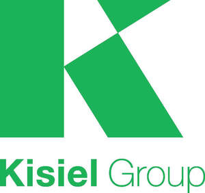

Trade Mark Journal No.2025/047 21 November 2025
UK00004290643 6 November 2025 (36,37)

- Class 36
- Property investment services; Real estate and property management services; Property (Real estate -) management; Real estate property management; Real property management; Commercial property investment services; Financing of real estate development projects; Property asset management services; Property portfolio management; Real estate services related to management of property investments; Property management services; Financing services relating to real estate development; Provision of finance for real estate development; Property (Real estate -) investment; Property (Real estate -) consultancy services; Financial services relating to real estate property and buildings; Leasing of real estate property; Agency services for the leasing of real estate property; Rental of real estate and property; Property (Real estate -) finance; Development of investment portfolios; Property (real estate -) appraisal [financial]; Providing real estate information relating to property and land; Real estate management services relating to residential buildings; Management of commercial properties; Financing of development projects.
- Class 37
- Property development services [construction]; Development of land [construction]; Construction of property; Renovation of property; Construction of residential properties; Building construction supervision services for real estate projects; Construction land developing; Construction; Building construction; Scaffolding construction; Building, construction and demolition; Construction of buildings; Buildings (Construction of -); Industrial construction; Infrastructure construction; Residential construction; Building construction supervision; Supervision (Building construction -); Supervision of building construction; Pipeline construction; Insulation construction; Building construction and demolition services; Construction of tunnels; Construction of bridges; Erection of formwork for building and construction; Construction supervision of buildings; Building construction and repair; Construction of pipelines; Commercial construction; Construction of dams; Construction of factories; Building construction consultancy; Construction of railways; Pier construction; Pipeline construction and maintenance; Supervision of construction; Construction supervision; Construction of roads; Building and construction services; Building construction services; Custom building construction; Erection of scaffolding for building and construction; Road construction; Factory construction; Offshore construction; Underwater building and construction; Construction of walls; Construction of houses; Buildings (Waterproofing of -) during construction; Onshore construction; Construction of chimneys; Construction of carriageways; Custom construction of buildings; Construction of greenhouses; Construction consultancy; Construction of floors; Construction services; Heavy engineering construction; Underground construction; Erection of scaffolding for civil engineering construction; Construction of manufacturing and industrial buildings; Erection of formwork for civil engineering construction; Construction of buildings and other structures; Construction of kitchens; Building construction supervision services for building projects; Construction of motorways; Underwater construction; Construction of steel structures for buildings; Construction of piles; Services for the construction of buildings; Hiring of construction machinery; Harbour construction; Rental of building construction machinery; Consultation in building construction supervision; Construction of foundations for buildings; Insulation of buildings during construction; Buildings (Insulation of -) during construction; Construction consultation; Buildings (Damp-proofing of -) during construction; Steel structure construction works; Buildings (Supervision during construction of -); Street construction; Site preparation [construction]; Rail infrastructure construction; Construction of ceilings; Construction of healthcare buildings; Construction of partitioning; Custom construction of bridges; Hydro-electric factory construction; Construction of hydroelectric factories; Construction of sunrooms; Sealing of buildings during construction; Buildings (Sealing of -) during construction; Buildings (Fire-proofing of -) during construction; Sign construction; Civil infrastructure construction; Construction of ramparts; Building inspection [in the course of building construction]; Construction of partitions; Construction supervision of civil engineering projects; Custom construction of roads; Residential and commercial building construction; Construction of foundations for roads; Construction of institutional buildings; General building construction services; Construction of steel fabrications; Fireproofing during construction; Construction of airports; Construction of cubicles; Construction of foundations for dams; Construction of educational buildings; Construction of multihome buildings; Damp-proofing during construction; Scenery construction; Construction of ports; Consultancy relating to residential and building construction; Hiring of construction equipment; Construction of railway roadbeds; Construction of stables; Custom construction of factories; Civil engineering construction; Custom construction of motorways; Aviation infrastructure construction.
Kisiel Ltd